THE ROAD AHEADLA RUTA TE ESPERA
The road is more hole than asphalt, and the only way through is fast. Steer around the potholes, grab every coin you can, and save your jump for when you really need it. Every coin you bring home goes into the bank, to buy a tougher or faster car and a trail to show off with.
La ruta tiene más pozo que asfalto, y la única forma de pasar es ir rápido. Esquiva los baches, recoge todas las monedas que puedas y guarda el salto para cuando de verdad lo necesites. Cada moneda que traes a casa va al banco, para comprar un auto más resistente o más rápido y una estela para lucirte.
How long can you last? A full day on the road goes by every two minutes, from open country to pine woods to the city, and the night gets harder.
¿Cuánto vas a aguantar? En la ruta, un día entero pasa cada dos minutos, del campo a los pinares y a la ciudad, y la noche se pone más difícil.
ON THE ROADEN LA RUTA
-
Potholes.Baches. Each one costs your car a bar of strength. The longer you drive, the more there are. Cada uno le cuesta a tu auto una barra de fortaleza. Cuanto más conduces, más hay.
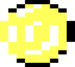
Coins.Monedas. Your score and your money. They drift slower than the road, so they come to you. Son tu puntaje y tu dinero. Van más despacio que la ruta, así que vienen hacia ti.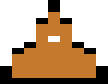
Cones.Conos. Don't run them over: jump over them, and they pay coins for every instant you hang above. No los atropelles: sáltalos, y te pagan monedas por cada instante que pasas encima.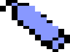
Jump tanks.Tanques de salto. One jump each. Up in the air, potholes can't touch you, but you can't steer either. Un salto cada uno. En el aire, los baches no te tocan, pero tampoco puedes girar.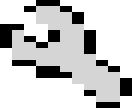
Wrenches.Llaves. Give back a bar of strength, when your car is just one hit short of perfect. Te devuelven una barra de fortaleza, cuando a tu auto le falta un solo golpe para estar entero.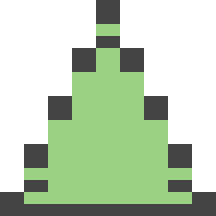
Medals.Medallas. Seven to win, from cone points to surviving a whole hour. One of them is a secret. Siete para ganar, desde los puntos de cono hasta aguantar una hora entera. Una es secreta.
THE GARAGEEL GARAJE
| Car | Auto | Strength | Fortaleza | Price | Precio | |
|---|---|---|---|---|---|---|
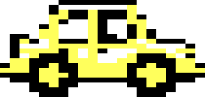 | Stock | 3 | FreeGratis | |||
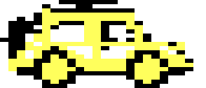 | Truck | 4 | 200 | |||
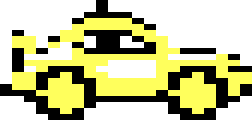 | Sport | 3 | 500 | |||
| ??? | 4 | 700 |
Plus nine trails to buy, from plain colors to the Rainbow. Everything you buy, your medals and your record are saved on the disk.
Y nueve estelas para comprar, desde colores lisos hasta la Rainbow. Todo lo que compras, tus medallas y tu récord se guardan en el disco.
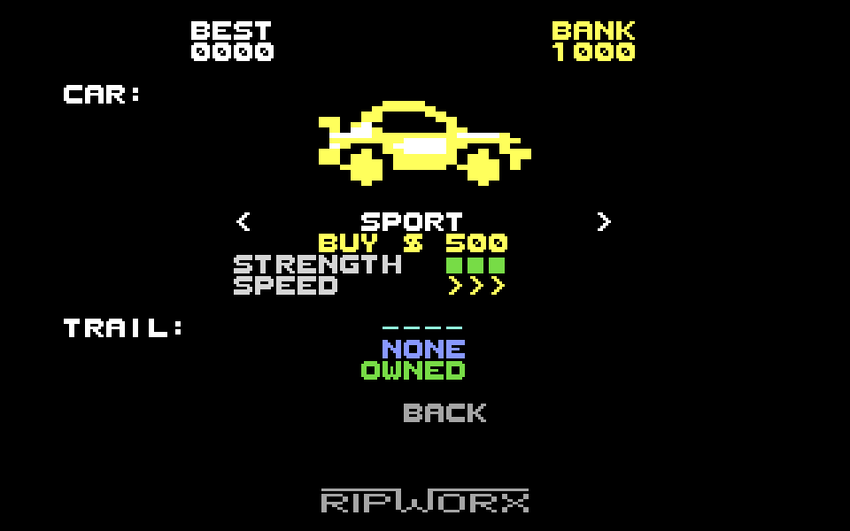
SCREENSPANTALLAS
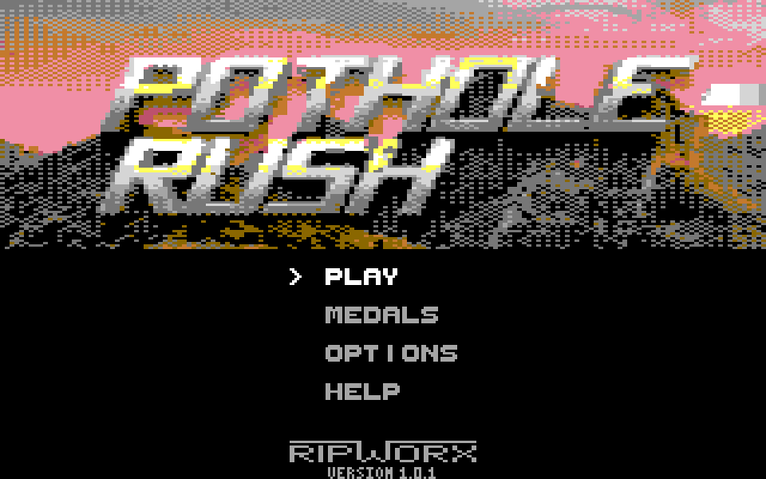
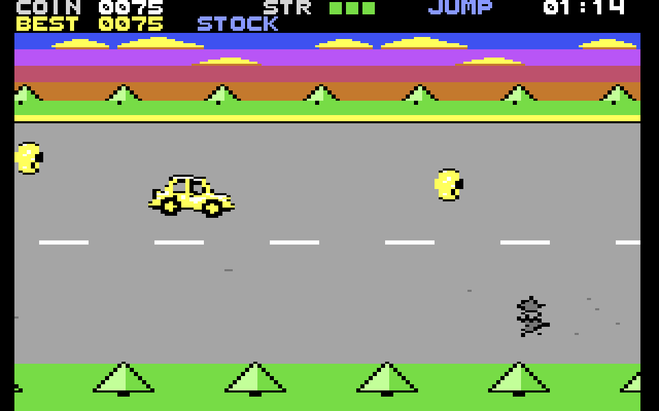
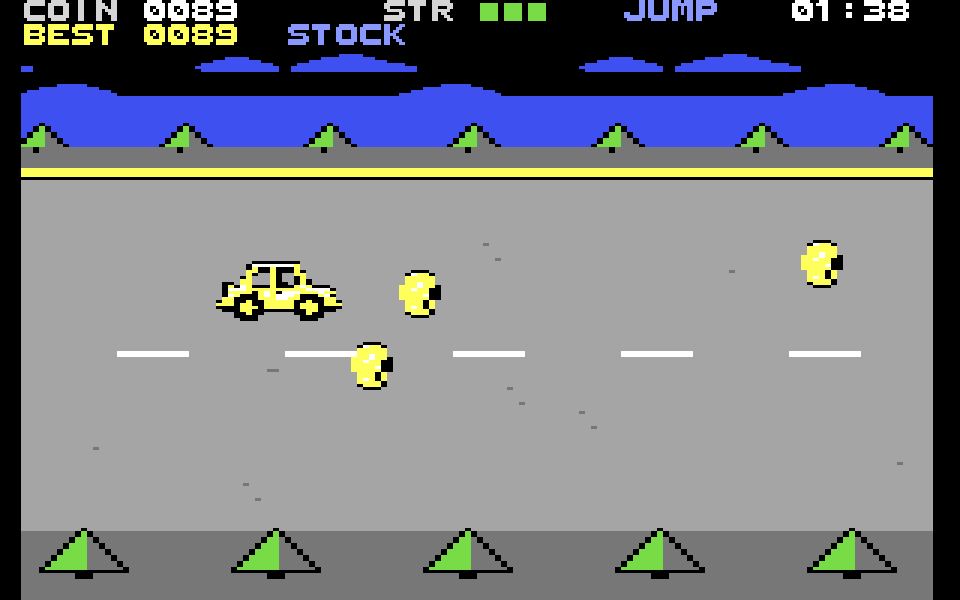
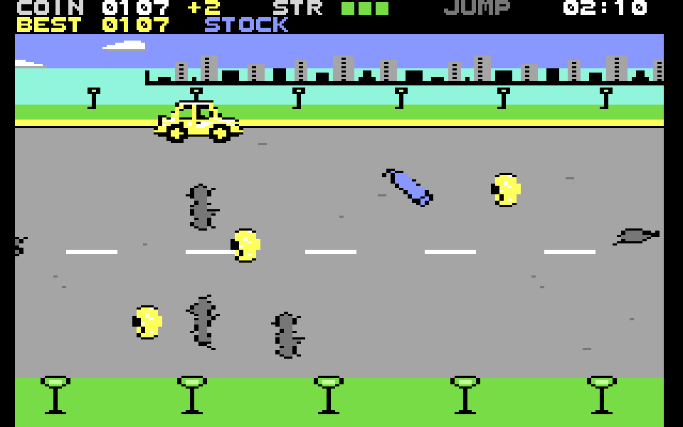
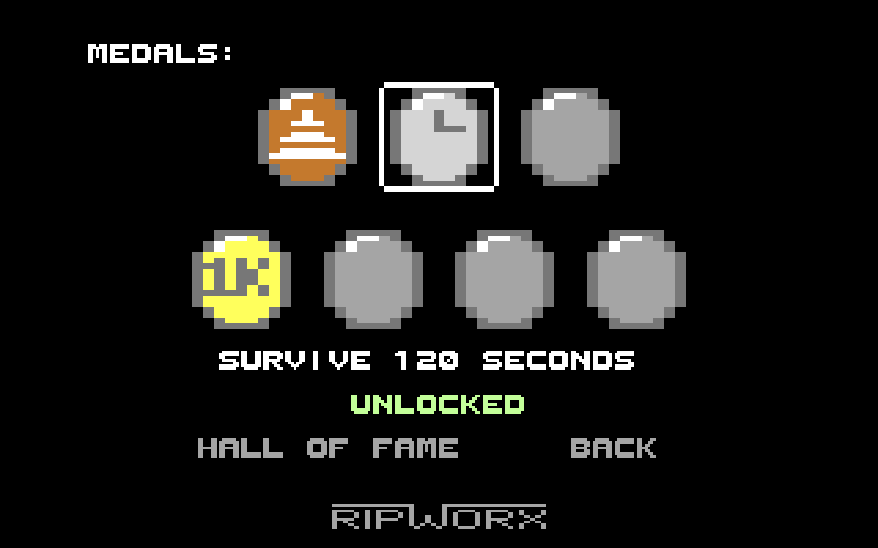
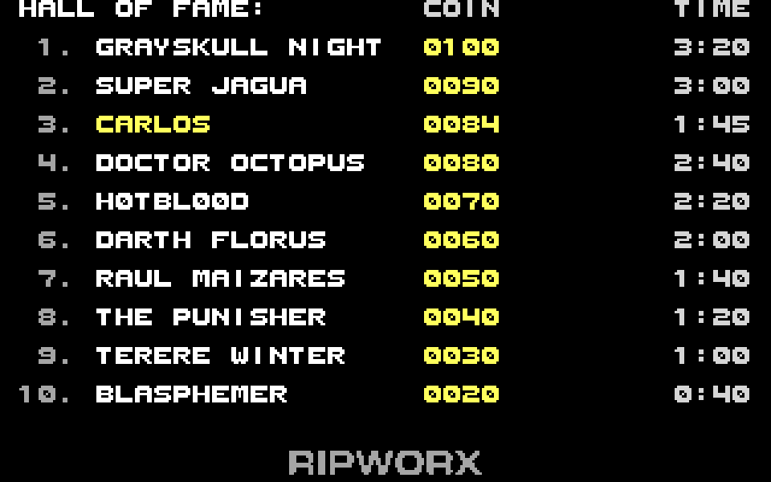
DOWNLOADDESCARGA
Test version 11c for PAL machines · 1 MBVersión de prueba 11c para máquinas PAL · 1 MB
What's inside
Qué trae
.d64disk image, with the presentation and the loading screen.prgfile, the game alone- The instruction manual in English and in Spanish (PDF)
- Imagen de disco
.d64, con la presentación y la pantalla de carga - Archivo
.prg, el juego solo - El manual de instrucciones en español y en inglés (PDF)
What you need
Qué necesitas
A PAL Commodore 64 with a disk drive, or an SD2IEC, Pi1541, Ultimate or Kung Fu Flash. A joystick in either port, or just the keyboard. Or an emulator such as VICE.
Una Commodore 64 PAL con disquetera, o una SD2IEC, Pi1541, Ultimate o Kung Fu Flash. Un joystick en cualquier puerto, o solo el teclado. O un emulador como VICE.
How to load it
Cómo cargarlo
Type LOAD"*",8, then RUN. On a standard 1541 it takes
about two minutes to reach the menu. In an emulator, choose a PAL model and open the
.d64.
Escribe LOAD"*",8 y después RUN. En una 1541 común
tarda unos dos minutos en llegar al menú. En un emulador, elige un modelo PAL y abre el
.d64.
This version is for PAL machines only: on an NTSC Commodore 64 the game runs too fast. The NTSC and cartridge versions are on the way.
Esta versión es solo para máquinas PAL: en una Commodore 64 NTSC el juego corre demasiado rápido. Las versiones NTSC y en cartucho están en camino.
Share it
Compártelo
You may copy and share the zip and everything in it, free of charge and for non-commercial purposes, as is and crediting its authors: CC BY-NC-ND 4.0 license.
Puedes copiar y compartir el zip y todo lo que trae, gratis y sin fines comerciales, tal cual y diciendo quiénes son sus autores: licencia CC BY-NC-ND 4.0.
THE STORYLA HISTORIA
Sebas Zayas created Pothole Rush in 2014 on MIT's Scratch website. You can still play the original at scratch.mit.edu.
Sebas Zayas creó Pothole Rush en 2014 en el sitio de Scratch del MIT. El original todavía se puede jugar en scratch.mit.edu.
Twelve years later, his father Carlos Zayas brought it to his favorite retro computer, the Commodore 64, with the help of Claude, by Anthropic. The rules and the spirit are Sebas's; the scenery, the music and the sound were made anew for the C64.
Doce años después, su padre, Carlos Zayas, lo llevó a su computadora retro favorita, la Commodore 64, con la ayuda de Claude, de Anthropic. Las reglas y el espíritu son de Sebas; el paisaje, la música y el sonido se hicieron de nuevo para la C64.
What's different from the original
Qué cambia respecto del original
- Joystick or keyboard instead of the mouse.
- New music and sound effects for the C64's SID chip.
- Bushes and lampposts in parallax instead of trees, and a day that turns to night every two minutes.
- Everything is saved on the disk: money, purchases, medals, options and the Hall of Fame, which is new.
- A new medal for surviving a whole hour, and one more bar of strength for every car.
- The bugs of the original are fixed.
- Joystick o teclado en lugar del mouse.
- Música y efectos nuevos para el chip de sonido SID de la C64.
- Arbustos y faroles en paralaje en lugar de árboles, y un día que se vuelve noche cada dos minutos.
- Todo se guarda en el disco: el dinero, las compras, las medallas, las opciones y el salón de la fama, que es nuevo.
- Una medalla nueva por aguantar una hora entera, y una barra más de fortaleza en cada auto.
- Los errores del original están corregidos.